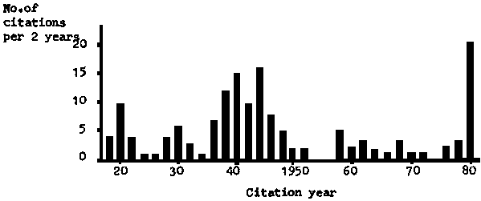

After the double fuel crises of 1973 and 1979, the harmful effect of high and rising oil prices on the economies and development efforts of oil-importing developing countries have become apparent. There has, as a result been increased interest in indigenous, renewable energy sources, of which biomass in the form of wood or agricultural residues is the most readily available in many developing countries.
Figure 1.1 Wood gasification citations in Chemical Abstracts

A characteristic of the energy system in many developing countries - in particular in rural areas - is that internal combustion engines are widely used in stationary applications such as electric power generation and operation of water pumps and mills. Technologies such as gasification, which allow utilization of biomass fuel in such engines after minimum preparation, are therefore of particular importance.
In industrialized countries internal combustion engines are mainly used for vehicles. Electricity generated in large central power stations is used for most of the stationary applications.
These different structures of energy systems explain why there appears to be fairly small interest in using biomass gasifiers for operation of internal combustion engines in the industrialized world, whereas several developing countries are either introducing small biomass gasifiers or are in the process of evaluating the technology.
Charcoal gasifiers dominate the present re-introduction of small gasifiers for engine operation in developing countries. They are the basis of the systems used in the Philippine programme and in Brazil, see (5). Much of the indigenous research and development now carried out in developing countries is also concentrated on charcoal gasifiers in view of their good prospects for early commercialization.
As illustrated by Figure 1.2, the utilization of charcoal gasifiers does, however, imply higher demands on the biomass resources, resources which are indeed already over-exploited in many developing countries. On the other hand, at least some designs of charcoal gasifiers are less likely to cause operational trouble than wood gasifiers or gasifiers for agricultural residues. This is because one of the potential problems with the latter, the excessive tar content in the gas, is virtually eliminated by the removal of most of the volatiles in the production process for charcoal.
Experience from the Second World War shows, however, that properly designed wood gasifiers, operated within their design range and using fuels within the fuel specifications (which may differ between designs), can provide a sufficiently tar free gas for trouble-free operation.
One of the objectives of this publication is to make decision-makers more aware of the possibilities of using wood gasification as a substitute for gasoline and diesel oil, without unreasonable increase of the demand on the natural resource.